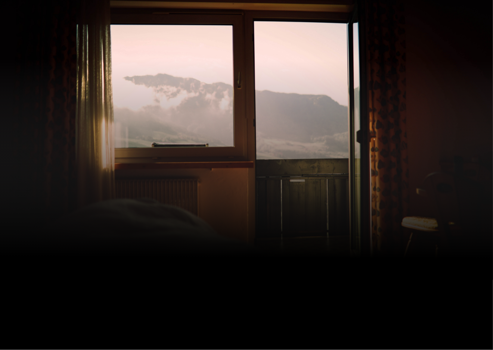
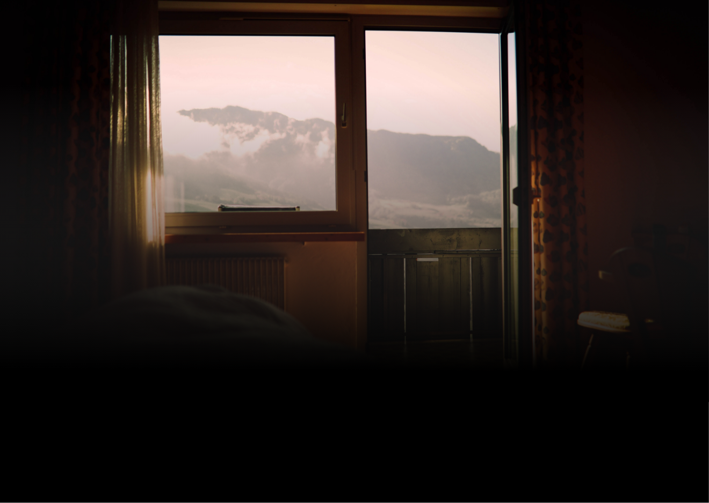

About
장작은 타고난 후 재를 남기듯이 노래의 경험은 기록을 남긴다.
장작은 타고난 후 재를 남기듯이 노래의 경험은 기록을 남긴다.
터너
를 통해
음악 이야기를
공유하며
실제적인 소유까지
경험
해보세요
음악을 돌린다는 것은 음악을 듣는다는 뜻입니다.
우리가 모두 각자의 음악을 돌리는 터너가 되자는 뜻을 담았습니다.
이 달의 플레이리스트에 선정되면
현직 디자이너가 직접 디자인하여
나만의 LP를 제작해 보내드려요
 

공유받은 플레이리스트를 한곡한곡 추가하지 않고
버튼 하나로 내가 사용하는 음원사이트로
바로 추가할 수 있어요
자신이 구성한 플레이리스트에
스토리텔링을 담아 공유할 수 있어요
느꼈던 감정을 함께 공유해보세요